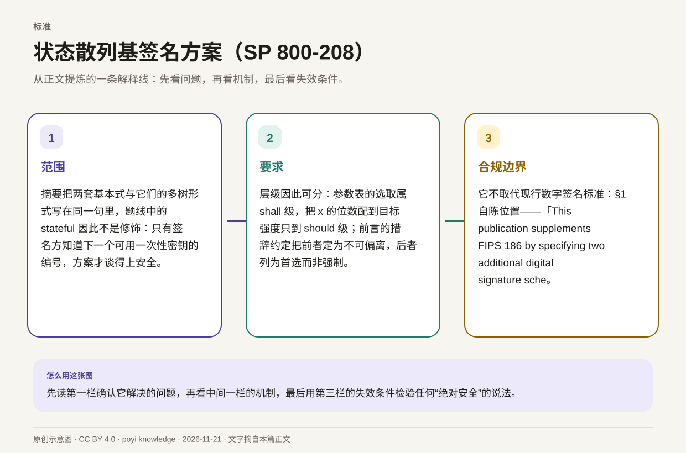
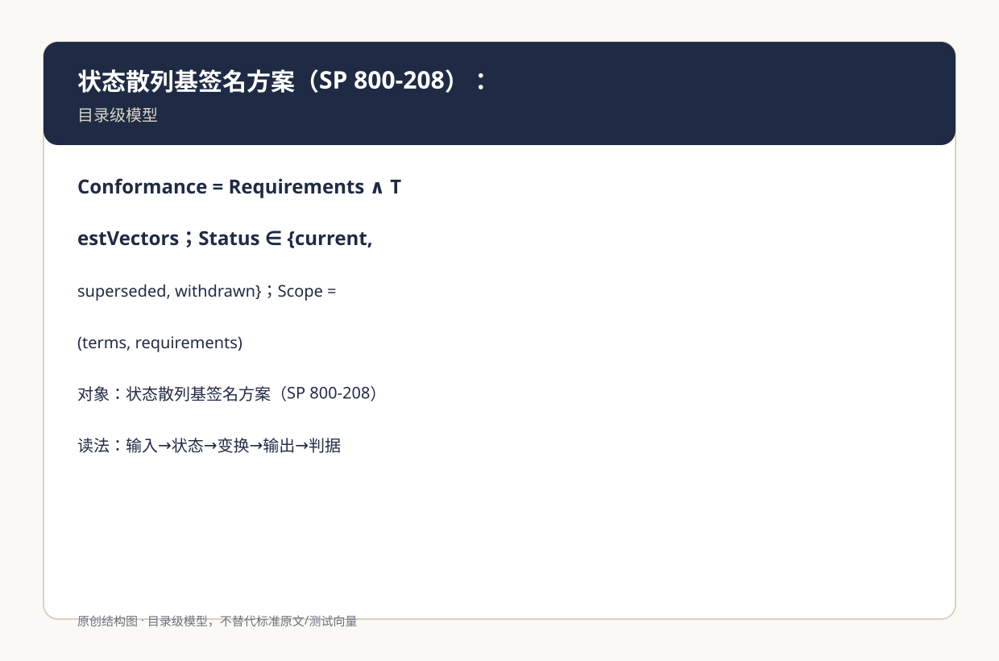

原理与机制
标准：状态散列基签名方案（Stateful Hash-based Signature Schemes）。摘要首句给出规定对象：「This recommendation specifies two algorithms that can be used to generate a digital signature」，随即点名四套方案：「the Leighton-Micali Signature (LMS) system and the eXtended Merkle Signature Scheme (XMSS), along with their multi-tree variants, the Hierarchical Signature System (HSS) and multi-tree XMSS (XMSSMT).」扉页标题行为「Recommendation for Stateful Hash-Based Signature Schemes」：两式都靠维护签名状态成立，而非无状态签名。摘要把两套基本式与它们的多树形式写在同一句里，题线中的 stateful 因此不是修饰：只有签名方知道下一个可用一次性密钥的编号，方案才谈得上安全。

为什么重要
风险写在 §1.2：私钥是一大堆一次性密钥，「The signer needs to ensure that no individual OTS key is ever used to sign more than one message.」一旦同一把签了两条消息，「then it would become computationally feasible for that attacker to forge signatures on arbitrary messages」。§1 交出取舍理由：「The security of the stateful HBS schemes in this publication depends only on the security of the underlying hash functions」，并补一句「it is believed that the security of hash functions will not be broken by the development of large-scale quantum computers」。§1.1 则承认代价：「Stateful HBS schemes are not suitable for general use because they require careful state management that is often difficult to assure」。三段连读给出取舍：安全性只落在散列函数的原像与第二原像难解上，代价是签名方必须守住状态；§1.1 那句不适用于一般用途，正是这一代价的直接表述。
应用与实例
措辞层级由前言说明界定，其中「indicate requirements to be followed strictly in order to conform to the publication and from which no deviation is permitted.」§4 的要求落在生成密钥对的一方：「each LM-OTS key in the system shall use the same parameter set, and the hash function used for the LMS system shall be the same as the hash function used in the LM-OTS keys.」以及「When generating LMS or HSS key pairs using SHA-256, the LMS and LM-OTS parameter sets shall be selected from the following two tables」。§3.1 关于 Winternitz 参数 x（秘密种子的位数）的一句只到建议级：「The size of x should generally correspond to the targeted security strength of the scheme.」。层级因此可分：参数表的选取属 shall 级，把 x 的位数配到目标强度只到 should 级；前言的措辞约定把前者定为不可偏离，后者列为首选而非强制。

边界与攻击面
它不取代现行数字签名标准：§1 自陈位置——「This publication supplements FIPS 186 [4] by specifying two additional digital signature schemes」。它也不是等待中的后量子签名标准：§1.1 写「NIST is in the process of developing standards for post-quantum secure digital signature schemes」，真正的替代件当时仍在制定。适用范围另有两处：§1 只批准子集——「This publication approves the use of some but not all of the parameter sets defined in [1] and [2] and also defines some new parameter sets.」并要求「This recommendation requires that key and signature generation be performed in hardware cryptographic modules that do not allow secret keying material to be exported, even in encrypted form.」
历史与背景
扉页首行为「NIST Special Publication 800-208」，作者行含「David A.Cooper Daniel C.Apon Quynh H.Dang」与「Morris J.Dworkin Carl A.Miller」；日期行为 2020 年 10 月，引用行「Natl.Inst.Stand.Technol.Spec.Publ.800-208, 59 pages (October 2020) CODEN: NSPUE2」，免费获取行后接 DOI 10.6028/NIST.SP.800-208。关键词行给出主题范围：「cryptography; digital signatures; hash-based signatures; public-key cryptography.」留存副本未设致谢页，亦未声明被后续修订取代。这些是文件自己的门面板信息：编号、标题行、六位作者、页数、出版月与 DOI；本份文本无致谢页，也未声明被后续版本取代，版次事实止于 2020 年 10 月这一版。
逐步示例与核验
形式模型与复算步骤
[S=\min_i S_i,\quad S_i\in{\text{密钥强度},\text{分组安全},\text{实现安全}}]
状态散列基签名方案的公开参数、密钥/随机数与消息；变量说明：S 为综合安全强度；各分量取最小值，不能只看密钥位数。1.读取标准规定的密钥/分组/模式参数。2.按标准表换算等效强度。3.取最弱分量作为系统强度。边界：公式只覆盖已登记的参数与假设；参数取值、标准版本和实现细节仍以来源为准。
参考出处
- Wikipedia search entry for 状态散列基签名方案. https://zh.wikipedia.org/w/index.php?search=%E7%8A%B6%E6%80%81%E6%95%A3%E5%88%97%E5%9F%BA%E7%AD%BE%E5%90%8D%E6%96%B9%E6%A1%88
- Handbook of Applied Cryptography (Menezes, van Oorschot, Vanstone). https://www.cacr.math.uwaterloo.ca/hac/